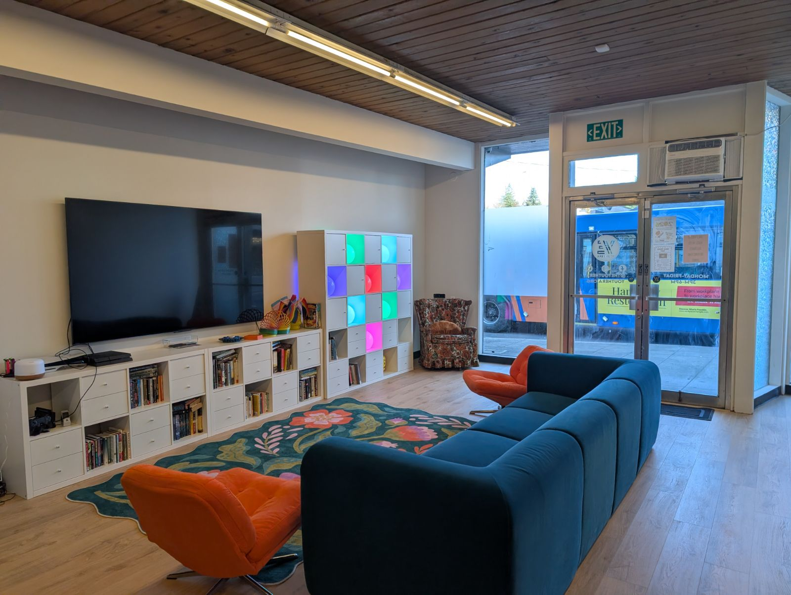
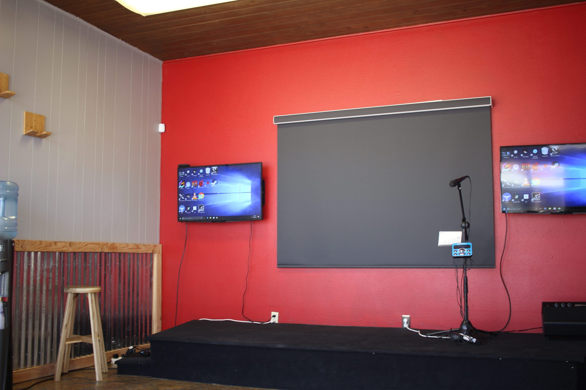
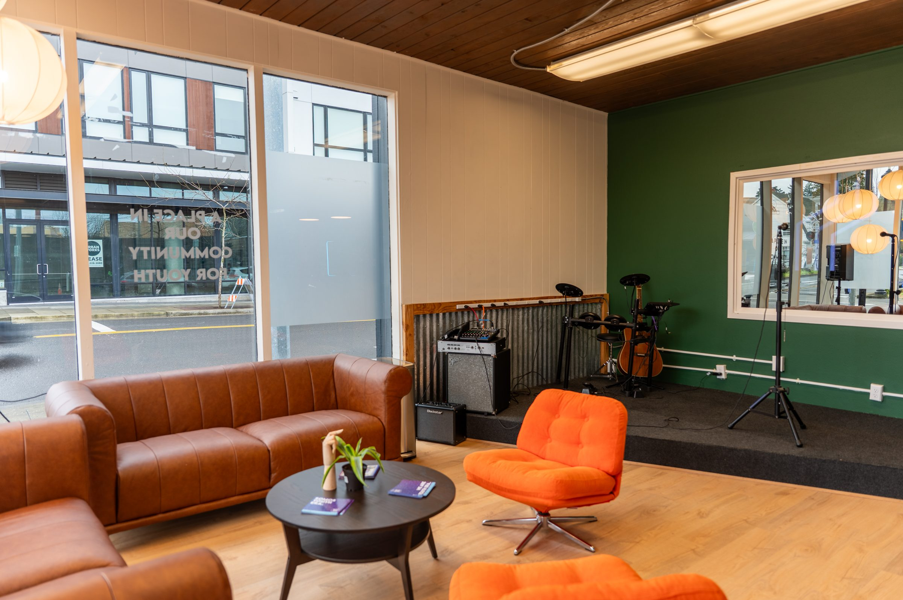
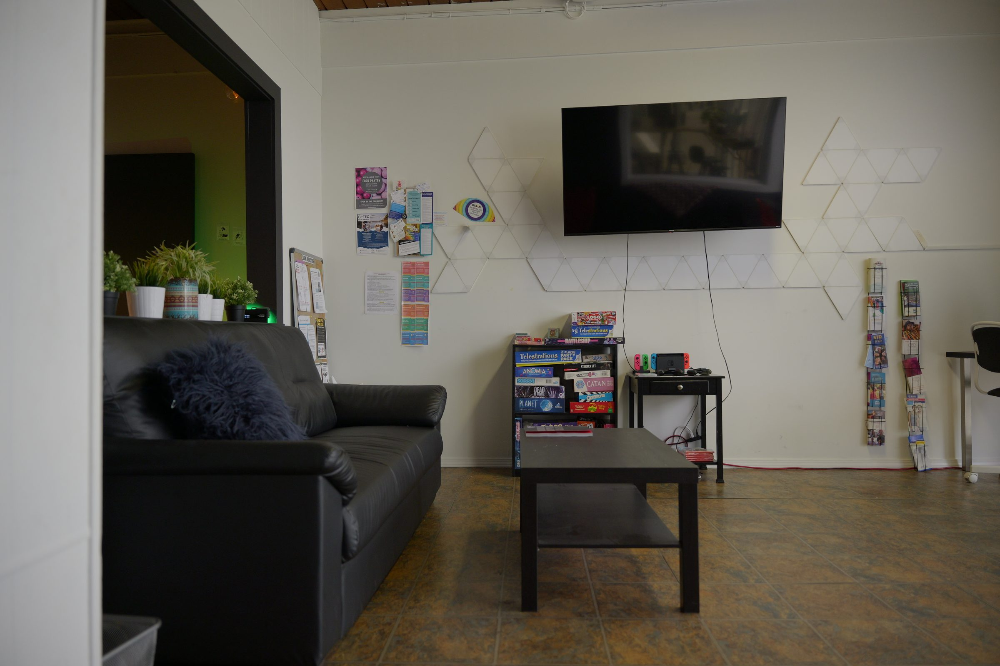
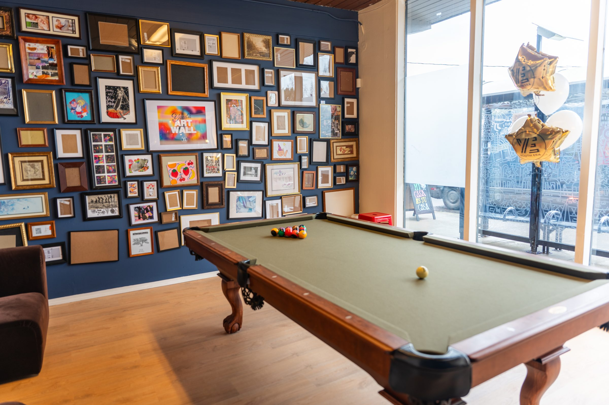
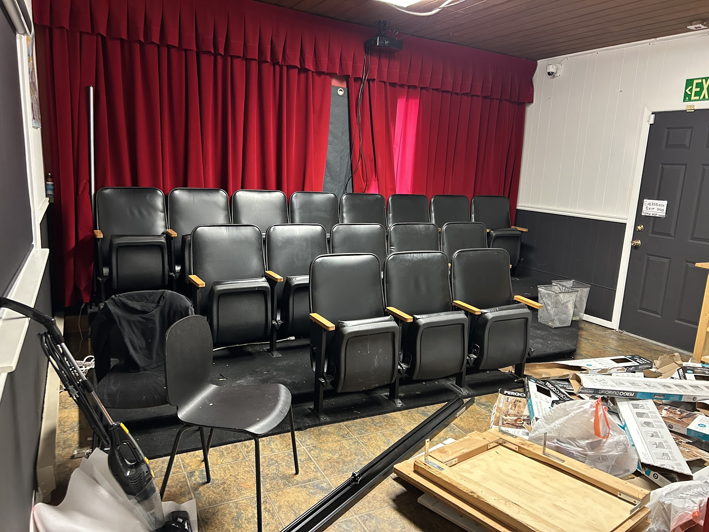
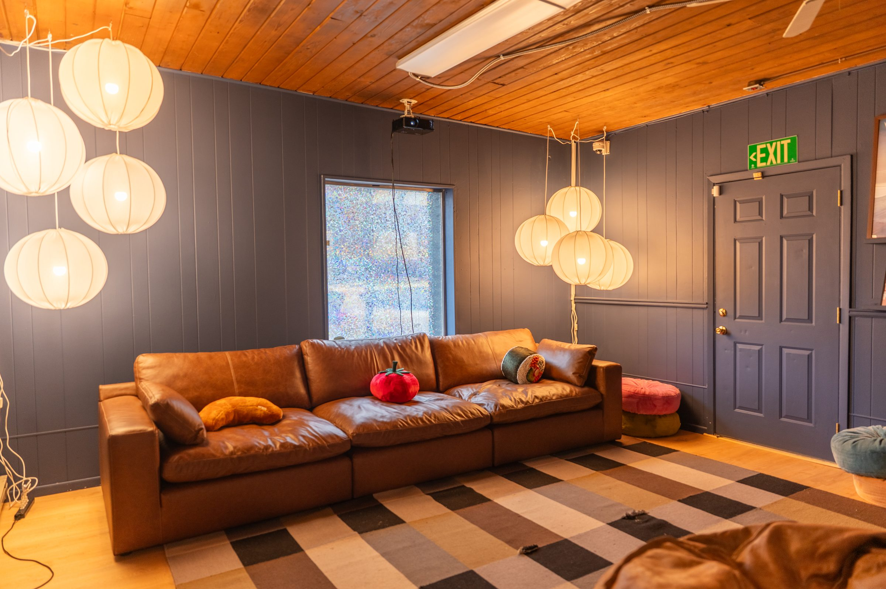
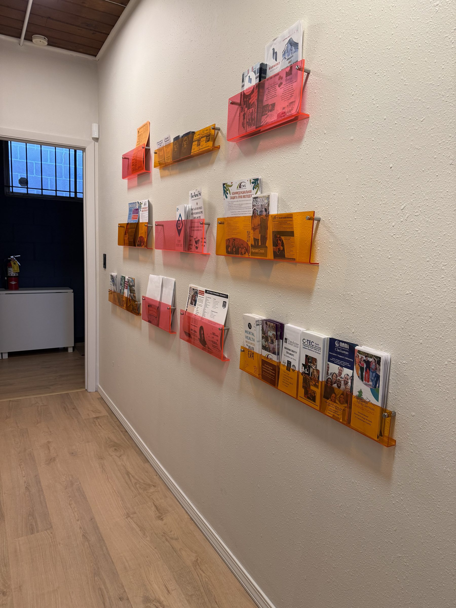
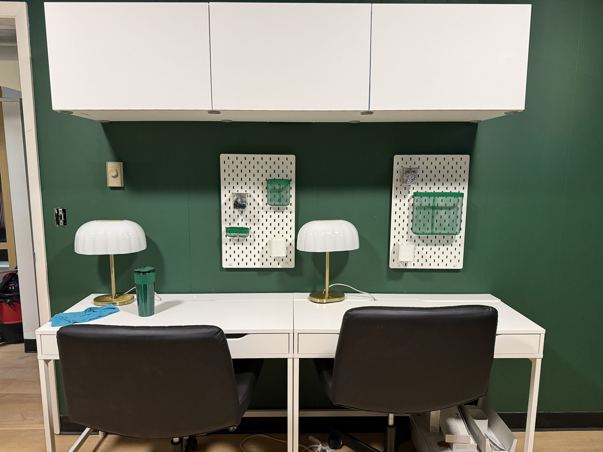
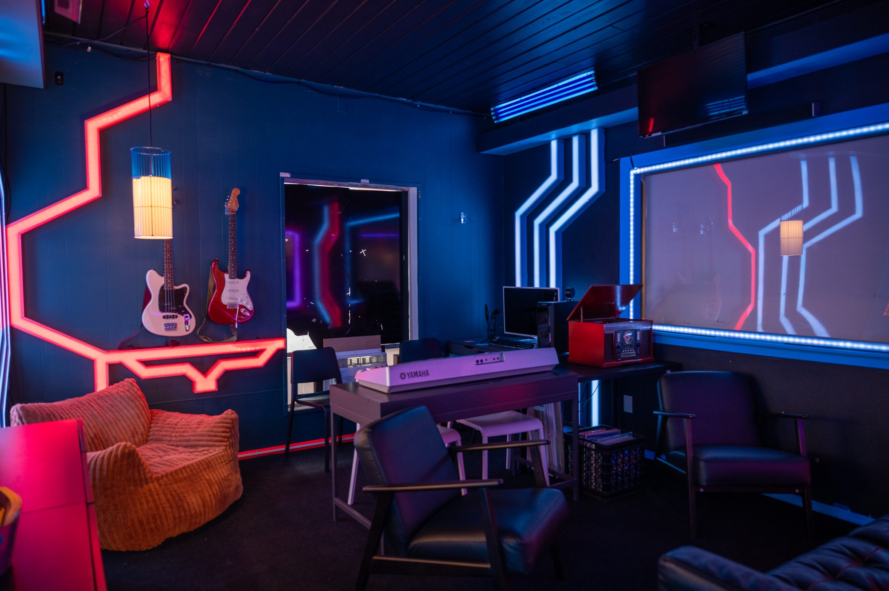

The Youth Era Clackamas Renovation
A seven-room center redesigned for everyone who walks in: youth, staff who need confidential and group spaces, and parents and partners deciding whether to trust us.
images/reno-hero.jpgYour best wide shot of the finished center
Designed for Everyone Who Walks In
This renovation was the first chance to build an entire space around the unified brand. Youth needed a place that treated them as the autonomous people they are. Staff needed rooms that actually worked for confidential one-on-ones, group meetings, and bringing youth together. Parents and community partners needed a place they could walk into and immediately trust.
Before and After
images/reno-before-1.jpgRoom 1, before
images/reno-after-1.jpgRoom 1, after (same angle if possible)
images/reno-before-2.jpgRoom 2, before
images/reno-after-2.jpgRoom 2, after (same angle if possible)
images/reno-before-3.jpgRoom 3, before
images/reno-after-3.jpgRoom 3, after (same angle if possible)
The Finished Space
images/reno-after-5.jpg
images/reno-after-4.jpg
images/reno-after-6.jpg